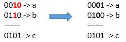

leetCode 1318. Minimum Flips to Make a OR b Equal to c
leetCode 1318. Minimum Flips to Make a OR b Equal to c.
Given 3 positives numbers a, b and c. Return the minimum flips required in some bits of a and b to make ( a OR b == c ). (bitwise OR operation). Flip operation consists of change any single bit 1 to 0 or change the bit 0 to 1 in their binary representation.
Example 1: 
Input: a = 2, b = 6, c = 5
Output: 3
Explanation: After flips a = 1 , b = 4 , c = 5 such that (a OR b == c)
Example 2:
Input: a = 4, b = 2, c = 7
Output: 1
Approach
- convert parameters number to binary
- compare each binary length, find the longest one. and then it will be standard for loop.
- using a for loop, iteratively compare each index of the binary numbers. If they are different, increment the result by 1.
- return results.
How to use Array.prototype.at()
The at() method of Array instances takes an integer value and returns the item at that index, allowing for positive and negative integers. Negative integers count back from the last item in the array.
const array1 = [5, 12, 8, 130, 44];
let index = 2;
console.log(`An index of ${index} returns ${array1.at(index)}`);
// Expected output: "An index of 2 returns 8"
index = -2;
console.log(`An index of ${index} returns ${array1.at(index)}`);
// Expected output: "An index of -2 returns 130"
Solution
var minFlips = function(a, b, c) {
const target = c.toString(2);
const bitA = a.toString(2);
const bitB = b.toString(2);
const size = Math.max(target.length, bitA.length, bitB.length);
let position = -1;
let result = 0;
for (let index = 0; index < size; index++) {
const value = target.at(position) ?? '0';
const valueA = bitA.at(position) ?? '0';
const valueB = bitB.at(position) ?? '0';
position -= 1;
if (value === '0') {
if (valueA === '1') result += 1;
if (valueB === '1') result += 1;
} else {
if (valueA === '1' || valueB === '1') continue;
result += 1;
}
}
return result;
};